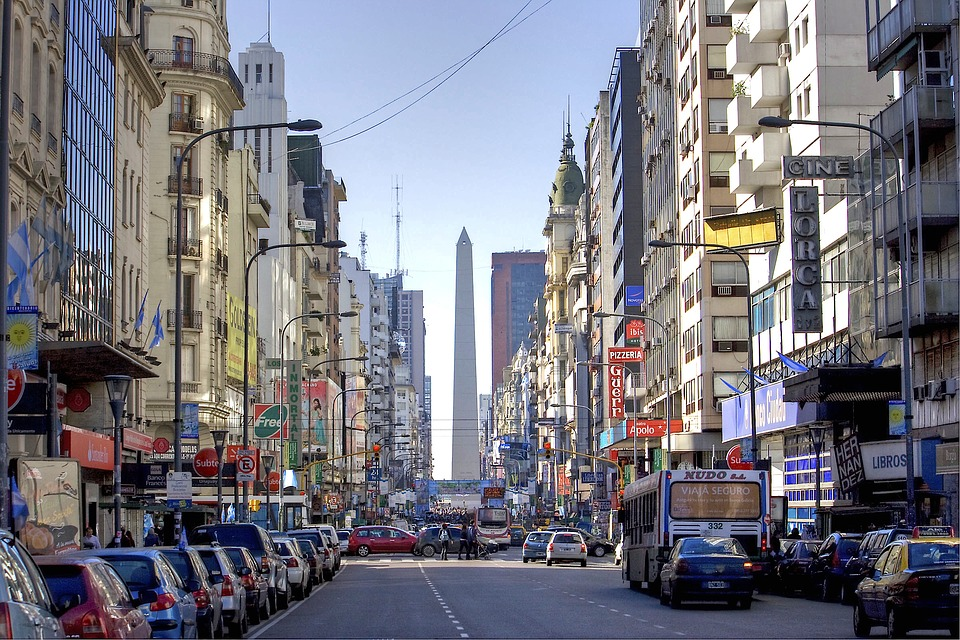
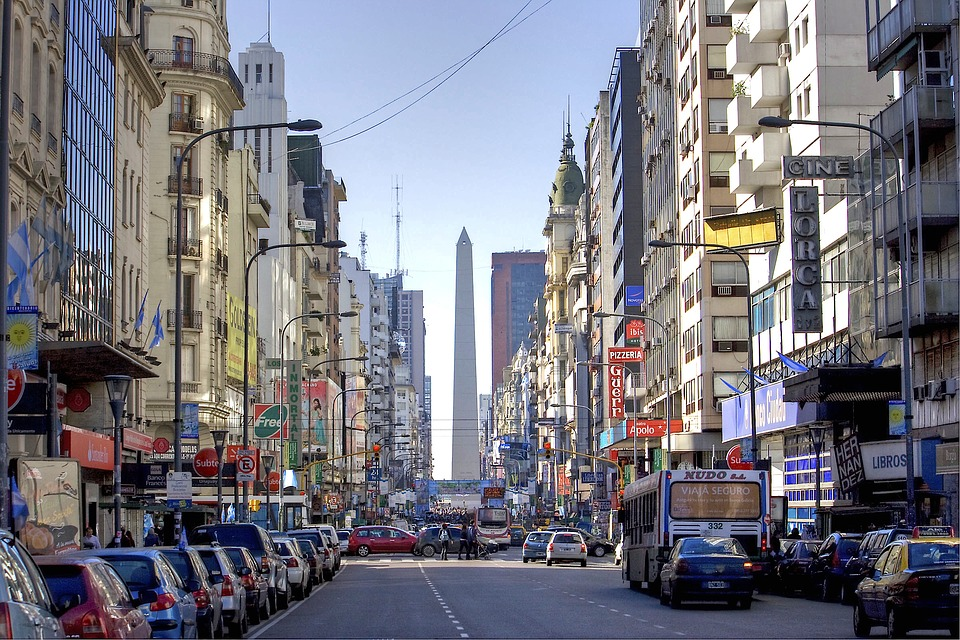

Creando mi propio camino


 



Arco de Triunfo de Barcelona
 Barcelona, España
Barcelona, España
 16 de Agosto de 2017
16 de Agosto de 2017
El Arco de Triunfo (en catalán: Arc de Triomf) es un monumento situado en la confluencia entre el paseo de Lluís Companys, el paseo de San Juan y la ronda de San Pedro, en la ciudad de Barcelona (España). Fue diseñado por el arquitecto José Vilaseca como entrada principal a la Exposición Universal de Barcelona de 1888. La decoración escultórica corrió a cargo de Josep Reynés, Josep Llimona, Antoni Vilanova, Torquat Tasso, Manuel Fuxá y Pere Carbonell.1 Esta obra está inscrita como Bien Cultural de Interés Local (BCIL) en el Inventario del Patrimonio Cultural catalán con el código 08019/1053.
A diferencia de otros arcos de triunfo de marcado carácter militar, el Arco de Triunfo de Barcelona tiene un mayor componente civil, caracterizado por el progreso artístico, científico y económico. El Arco de Triunfo ha sido utilizado como meta en alguna ocasión para algunas de las carreras pedestres populares más importantes de Barcelona, como la Jean Bouin o la Maratón de Barcelona. Asimismo, fue utilizado como recinto para la celebración de festivales y eventos musicales como el Primavera Sound. El monumento fue restaurado en 1989.